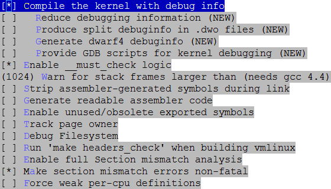
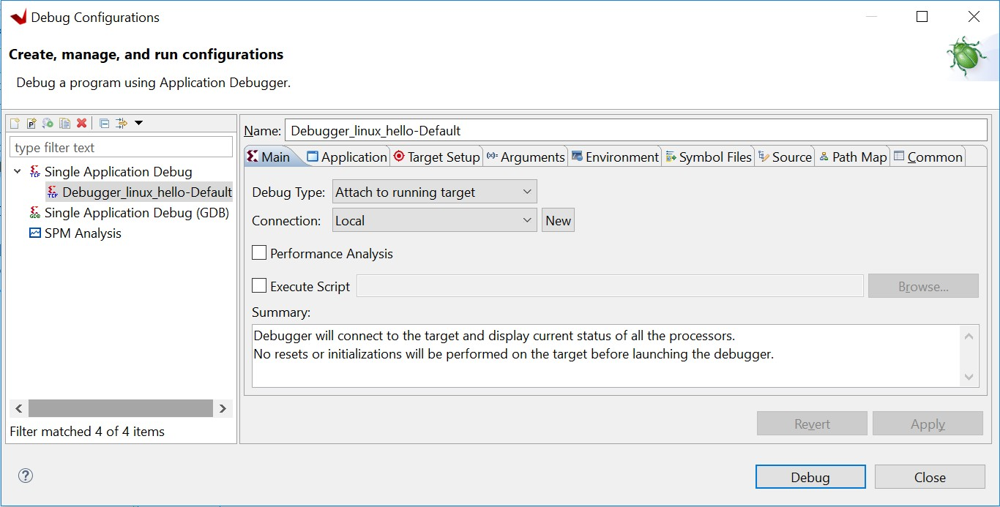
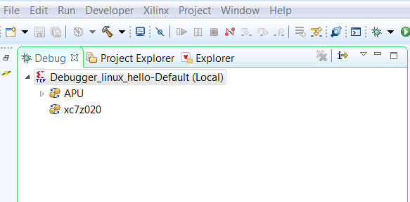
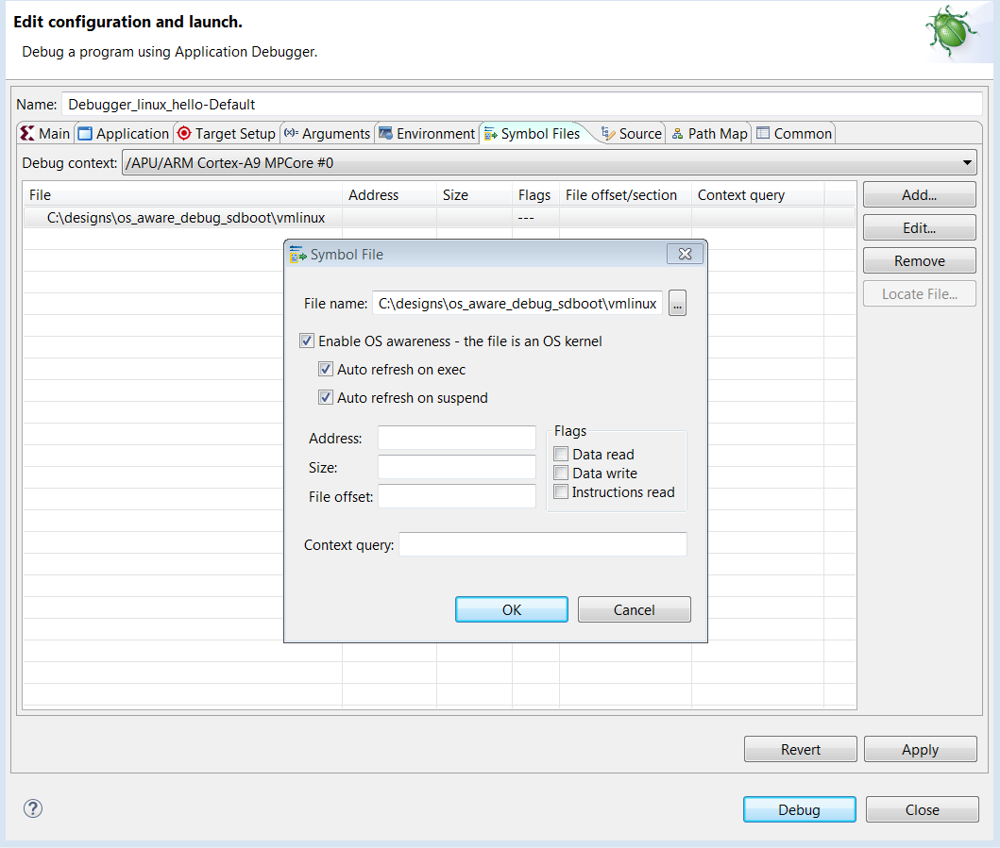
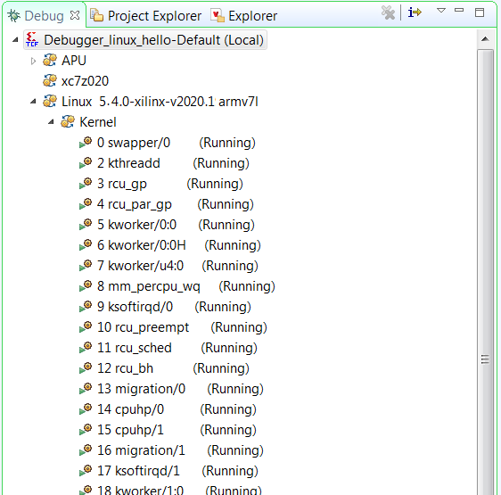
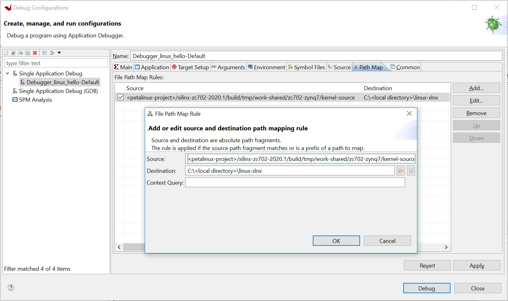
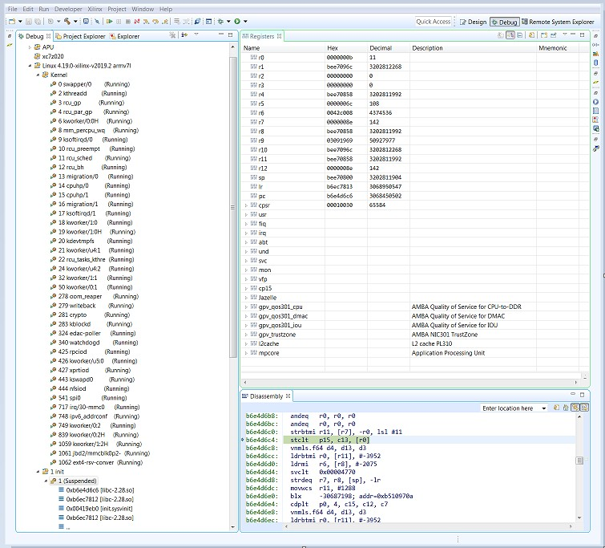
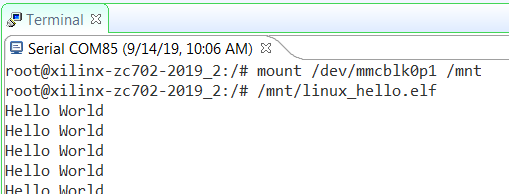
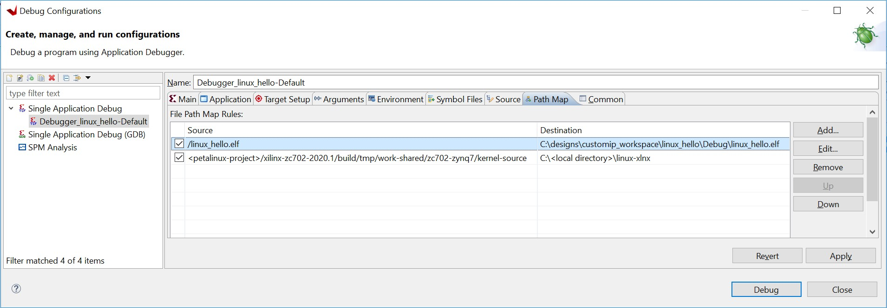
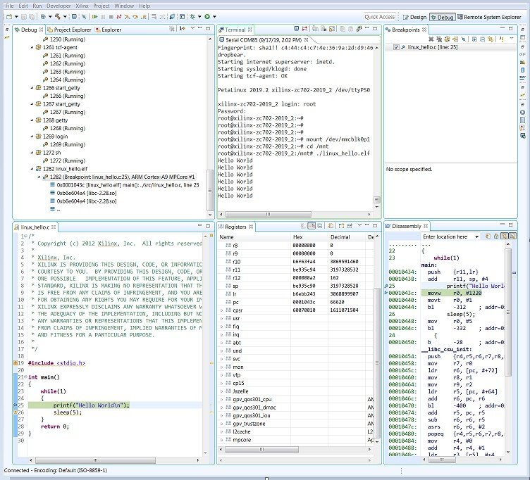

Linux OS Aware Debugging Using the Vitis Software Platform¶
OS-aware debugging helps you to visualize OS-specific information such as task lists, processes/threads that are currently running, process/thread-specific stack trace, registers, and variables.
To support this, the debugger needs to be aware of the operating system used on the target and know about the intrinsic nature of the OS.
With OS-aware debugging, you can debug the OS running on the processor cores and the processes/threads running on the OS simultaneously.
The Vitis™ unified software platform supports the OS-aware debug feature for Linux OS running on Zynq®-7000 SoC devices.
Setting Up Linux OS Aware Debugging¶
This section describes setting up OS aware debug for a Zynq board running Linux OS.
Configure the Linux Kernel¶
To be able to read the process list or to allow process or module debugging, the Linux awareness accesses the internal kernel structures using the kernel symbols. Therefore, the kernel symbols must be available; otherwise Linux aware debugging is not possible. The vmlinux file must be compiled with debugging information enabled as shown in Configure the Linux Kernel.
Note: The vmlinux file is a statically linked executable file
that contains the Linux kernel along with corresponding debug
information.
In PetaLinux, enable the below configuration options before compiling the Linux Kernel using the PetaLinux Tools build configuration command:
CONFIG_DEBUG_KERNEL=y
CONFIG_DEBUG_INFO=y
Follow the below steps to configure the Linux kernel to build with the debug information.
In the Linux machine terminal window, go to the directory of your PetaLinux project.
\$ cd \<plnx-proj-root\>Launch the configuration menu to configure the Linux kernel.
\$ petalinux-config -c kernelSelect Kernel hacking.
Select Compile-time checks and compiler options.
Select Compile the kernel with debug info.

Save the configuration. This sets the Linux kernel configuration file options to the following settings. You can verify that these options are enabled by looking in the configuration file.
Launch the configuration menu to configure the system-level options:
\$ petalinux-configa. Select Image Packaging Configuration.
b. Select INITRD for Root filesystem type.
c. Save configuration.
Build the PetaLinux using the PetaLinux build command
petalinux-build.After PetaLinux builds successfully, copy the
vmlinuxfile to your host machine. This file is needed for the debugger to refer to all Linux kernel symbols. Vmlinux generates under\<petalinux project file\>/images/linux/vmlinux.Copy
Vmlinuxto the host machine to use with the Vitis software platform for debugging the Linux kernel.Copy the Linux kernel source code to the host machine for debugging. The Linux kernel is present in
\<petalinux-project\>/build/tmp/work-shared/zc702-zynq7/ kernel-source.
Note: This document is composed and exercised using a Windows host machine, so it is necessary to copy the Linux source code to a location that is accessible for the Vitis tool running locally on the Windows host machine.
Creating the Hello World Linux Application to Exercise the OS Aware Debugging Feature¶
Open the Vitis software platform.
Select File → New → Application Project. The New Application Project wizard opens.
Use the information below to make your selections in the wizard screens.
Wizard Screen
System Property
Setting or Command to Use
Platform Select a platform from the repository. Click hw_platform [custom]. Application Project Details Application project name Enter ``linux_hello``. Select the target processor for the application project. Select ps7_cortexa9 SMP. Domain Select a domain Click linux_application_domain. Application settings If known, enter the sysroot, root FS, and kernel image paths. Otherwise, leave these options blank. Templates Available Templates Linux Empty Application Click Finish.
In Explorer view, expand the linux_hello project, right-click the src directory, and select Import to open the Import view.
Expand General in the Import view and select File System.
Click Next.
Select Browse.
Navigate to your design files folder and select the OSA folder and click OK.
Note: For more information about downloading the design files for this tutorial, see Design Files for this Tutorial.
Add the linux_hello.c file and click Finish.
The Vitis software platform automatically builds the application and displays the status in the console window.
Copy
linux_hello.elfto an SD card.
Debugging Linux Processes and Threads Using OS Aware Debug¶
Boot Linux as described in Booting Linux from the SD Card.
Create a Debug configuration.
Right-click linux_hello and select Debug as→ Debug Configurations.
The Debug Configurations wizard opens, as shown in the following figure.

In Main window, from the Debug Type drop-down list, select Attach to running target.
From the Connection drop-down list, select Local.
Click Debug.
If the Confirm Perspective Switch dialog box appears, click Yes. Debugger_linux_hello-Default opens in the Debug view, as shown in the following figure.

Set up the Linux kernel symbol file and enable the Linux OS awareness in the debug configuration.
There are multiple options provided by the Vitis software platform to enable Linux OS awareness feature enablement and debugging the applications. The following options are listed in the Symbol File dialog box.
Enable Linux OS Awareness: This option enables OS awareness.
Auto refresh on exec:
When this option is selected, all running processes are refreshed and displayed in the Debug view.
When this option is disabled, new processes are not displayed in the Debug view.
Auto refresh on suspend:
When this option is selected, all processes are re-synced whenever the processor suspends.
When this option is disabled, only the current process is re-synced.
In the Debug view, right-click Debugger_linux_hello-Debug (Local) and select Edit Debugger_linux_hello-Default (Local).
Click the Symbol Files tab.
Select /APU/Arm_Cortex_A9MPCore #0 from the Debug context drop-down menu and click Add. The Symbol File dialog box opens.
Click the browse button .
Provide the path of the
vmlinuxfile that you saved locally on the Windows host machine in the previous section, and check the box for Enable OS awareness- the file is an OS kernel, Auto refresh on exec, and Auto refresh on suspend, as shown in the following figure.
Click OK.
The Symbol File window closes.
Click Continue and then click Save to save the configuration changes. The Debug view opens, as shown in the following figure.

You can see the Linux kernel and list of processes running on the target.
Note: Because the Linux kernel is built on a different system (Linux) than the host machine (Windows) on which we are exercising the Linux OS aware application debug, symbol file path mapping information should be added.
Path mapping enables you to perform source-level debugging so that you can see stack trace, variables, set up source level breakpoints, and so on.
The debugger uses the Path Map setting to search and load symbols files for all executable files and shared libraries in the system.

Set up the Path Map.
a. Click the Path Map tab.
b. Click Add.
c. The source path for the kernel is the compilation directory path from the Linux machine as shown in the previous figure. For example,
\<petalinux-project\>/build/tmp/work-shared/zc702-zynq7/kernel-source.The destination path is the host location where you copied the kernel in the earlier step. For example, ``<local-directory>\linux-xlnx``.
d. Click Apply to apply the changes.
e. Click Continue to debug.

Debug a Linux process or thread.
As shown in Debugging Linux Processes and Threads Using OS Aware Debug](#debugging-linux-processes-and-threads-using-os-aware-debug), the list of processes running on the target is displayed. You can right-click any process and click Suspend. Using this method, you can exercise debugging features such as watch stack trace, registers, adding break points, and so on.
In the following figure, the suspended process is named 1 init.

Note: The addresses shown on this page might differ slightly from the addresses shown on your system.
Debugging the linux_hello Application with OS Aware Debug¶
Mount an SD card using
mount /dev/mmcblk0p1 /mnt.Run the
/mnt/linux_hello.elfapplication from the terminal as shown in the following figure.
To debug the linux_hello application you created in the previous section using OS aware debug, follow the steps described in Debugging Linux Processes and Threads Using OS Aware Debug, and in addition, add the path mappings for the linux_hello application as given in the following figure.
The source path is
/linux_hello.elf. The destination path is\<vitis- workspace\>linux_hello/Debug/linux_hello.elf.
In the Debug view, right-click Debugger_linux_hello-Default (Local) and select Relaunch.
In the Vitis debugger, do the following:
a. Observe the running application as one of the processes/threads in the kernel.
b. Right-click the linux_hello.elf thread and click Suspend to suspend the application.
c. Add a breakpoint.
These actions are shown in the following figure.

When the control hits the breakpoint, the Debug view updates with
information on the linux_hello.elf process.
The Debug view also shows the file, function, and the line information of the breakpoint hit. A thread label includes the name of a CPU core, if the thread is currently running on a core.
You can perform source-level debugging, such as step-into, step-out, and watching variables, stack trace, and registers. You can also perform process/thread level debugging, including inserting breakpoints, step-into, step-out, watching variables, stack trace, and so on.
Note: One limitation with this process is that the target side
path for a binary file does not include a mount point path. For
example, when the linux_hello process is located on an SD card, which
is mounted at / mnt, the debugger shows the file as /linux_hello.elf
instead of /mnt/linux_hello.elf.
Note: There is an additional way to Enable Linux OS Awareness in
the Vitis software platform using an XSCT command. For
information about this command, refer to the osa command help in
Xilinx Software Command-Line Tool
in the Embedded Software Development flow of the Vitis Unified Software Platform Documentation (UG1416).
© Copyright 2015–2020 Xilinx, Inc.
Licensed under the Apache License, Version 2.0 (the “License”); you may not use this file except in compliance with the License. You may obtain a copy of the License at
http://www.apache.org/licenses/LICENSE-2.0
Unless required by applicable law or agreed to in writing, software distributed under the License is distributed on an “AS IS” BASIS, WITHOUT WARRANTIES OR CONDITIONS OF ANY KIND, either express or implied. See the License for the specific language governing permissions and limitations under the License.